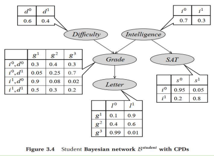
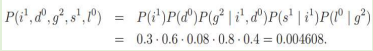
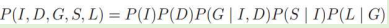

The second component of the Bayesian network representation is a set of local probability models that represent the nature of the dependence of each variable on its parents.
One such model, P (I), represents the distribution in the population of intelligent versus less intelligent
student.
Another, P (D), represents the distribution of difficult and easy classes.
The distribution over the student’s grade is a conditional distribution P (G | I, D). Therefore, there would be a different distribution for each assignment of values I, D.
For example, we might believe that a smart student in an easy class is 90 percent likely to get an A, 8 percent likely to get a B, and 2 percent likely to get a C. Conversely, a smart student in a hard class may only be 50 percent likely to get an A.
In general, each variable X in the CPD model is associated with a conditional probability distribution (CPD) that specifies a distribution over the values of X given each possible joint assignment of values to its parents in the model.
For a node with no parents, the CPD is conditioned on the empty set of variables.
Hence, the CPD turns into a marginal distribution, such as P (D) or P (I).
One possible choice of CPDs for this domain is shown in figure.

How do we use this data structure to specify the joint distribution? • Consider some particular state in this space, for example, i1; d0; g2; s1; l0
Intelligent=Yes
Difficulty=easy
Grade=B in easy class
SAT score=high
Letter quality=weak
Total probability of the state is:

As per the chain rule of Bayesian Network,
